Check 1Chat checks the inventory level of an item
PASSWhat this proves: asked "How many Pierson College Crewnecks do you have in each size, and what is the price?", the chat gave the exact price and stock for every size from the database, including the two sold-out sizes. The item page's own stock table shows the same numbers, so the answer is honest, not invented.
| Pierson College Crewneck | Price | XS | S | M | L | XL | XXL | Match |
|---|---|---|---|---|---|---|---|---|
Database (catalogue, inventory) | $39.99 | 12 | 2 | 8 | 0 | 0 | 2 | — |
| Chat answer | $39.99 | 12 | 2 | 8 | sold out | sold out | 2 | ✓ same |
| Item page stock table | $39.99 | 12 | 2 (low) | 8 | 0 (sold out) | 0 (sold out) | 2 (low) | ✓ same |
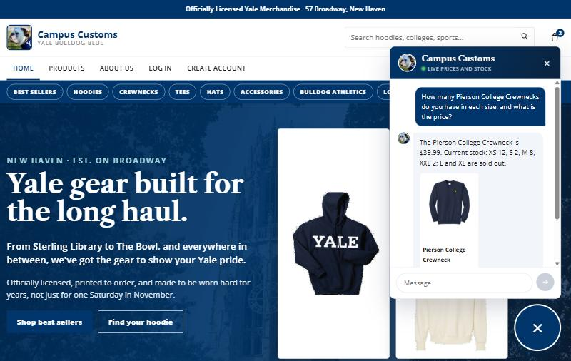
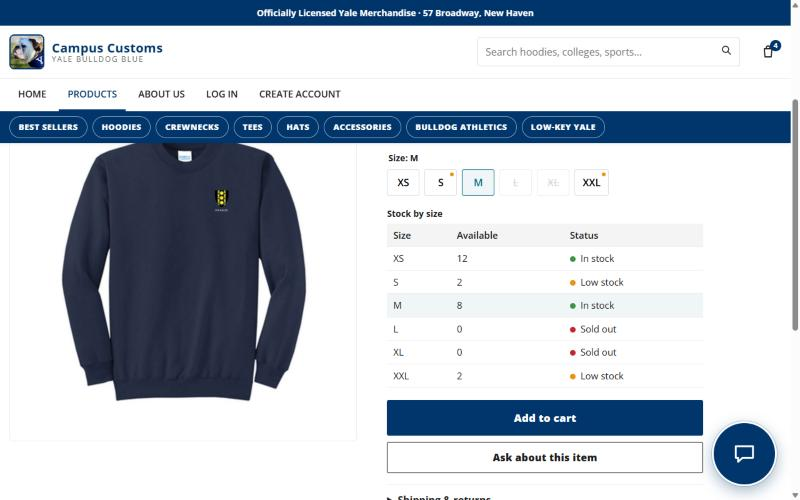
Check 2Dynamic search-result cards after a category question
PASSWhat this proves: typing "Show me your hoodies" in the chat while on the About Us page made a "We have Hoodies!" section appear on the page with 12 of 28 hoodie cards (each with price, a "why it fits" note and Add to cart). The chat also shows a preview. The cards are built live from the agent's search, not a fixed page.
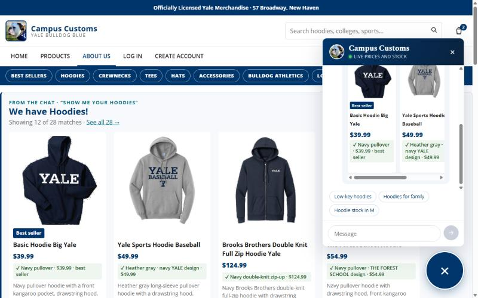
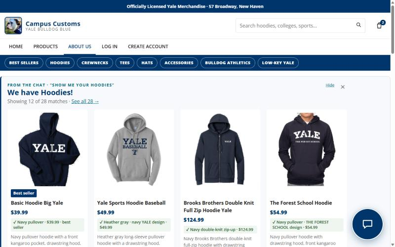
Check 3Problem 9 usability feature: sticky "Add to cart" bar
PASSWhat this proves: on an item page, a bar with the photo, price, stock, a size menu and Add to cart stays docked under the menu, so buying is always one click away. It offers only in-stock sizes (XS, S, M, XXL; L and XL are sold out). Choosing M and pressing Add to cart raised the cart from 3 to 4 and showed an "Added to your cart" strip. Nothing covers the product.
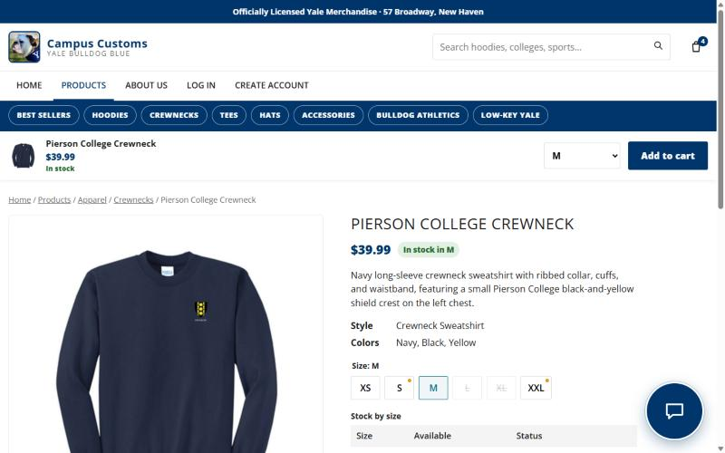
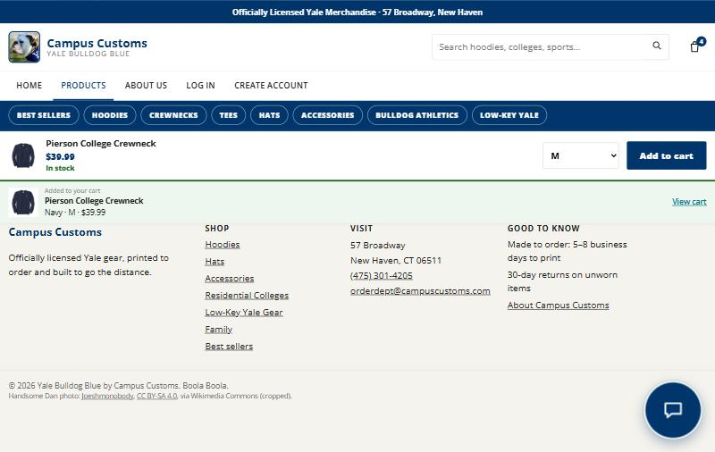
Also notedThe cheer banner stops when you hover over it
PASSWhat this proves: the navy banner of Yale cheers ("Boola Boola", "Bulldogs, Bulldogs, Bow Wow Wow"…) scrolls on its own, and stops the moment the mouse is over it so a shopper can read it. The label switches from "Hover to pause" to "❚❚ Paused". It starts again when the mouse moves away (on phones, a tap pauses it). Small touches like this make the shop feel authentic and easy to use.
| Browser's animation state | Before hover | Mouse over the banner | Mouse leaves |
|---|---|---|---|
| Banner animation | running | paused | running |
| Label | Hover to pause | ❚❚ Paused | Hover to pause |
How we tested: read the banner's play state from the browser (getAnimations()) before, during and after a mouse-over.
A still screenshot can't show motion, so this table records it. Click a strip to see the full page.
Everything elseOther features and enhancements also work
ALL PASS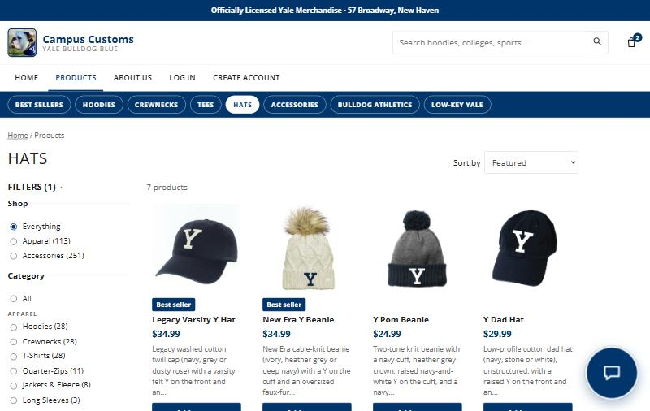
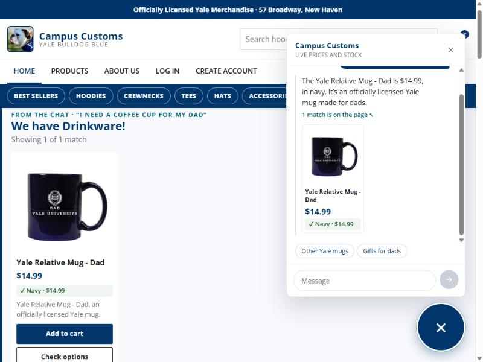
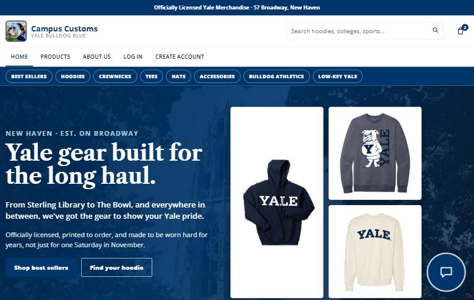
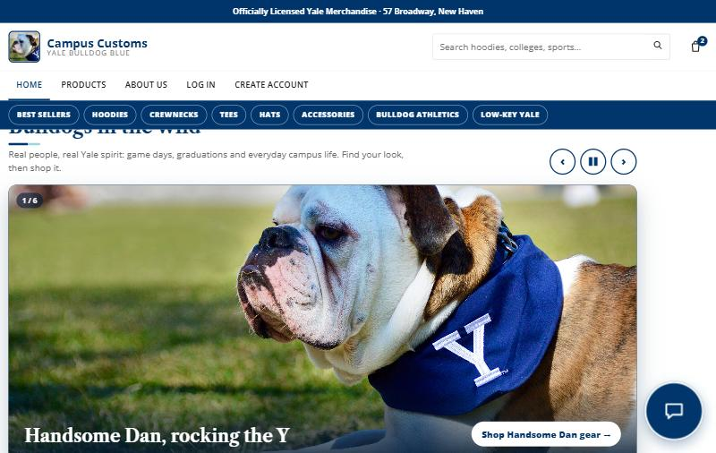
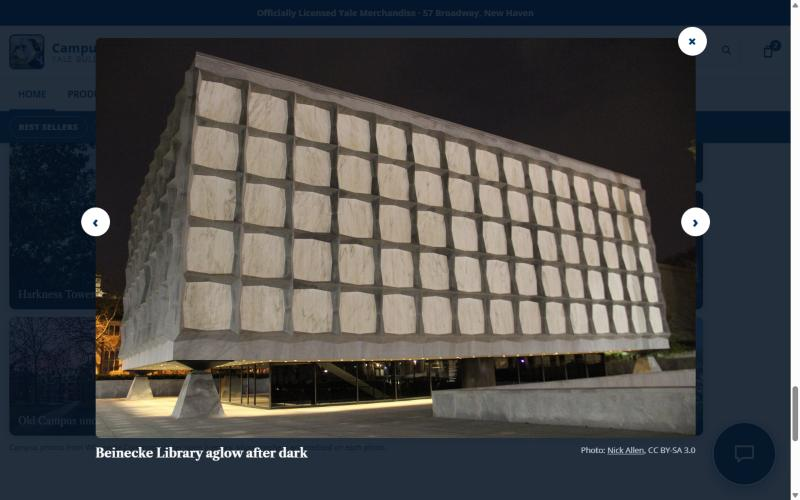
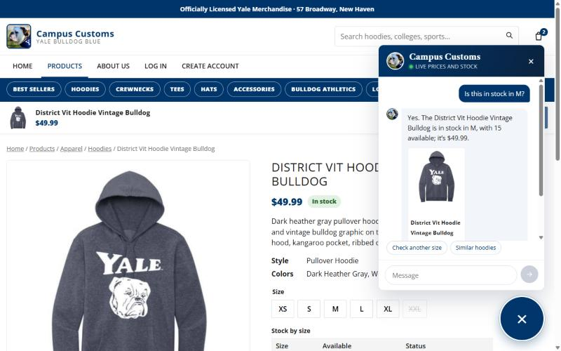
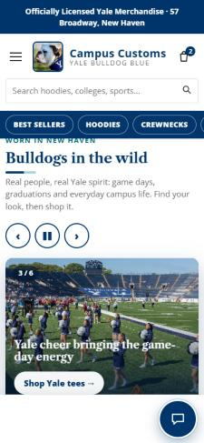
Automated checks (same day)
| Test file | What it checks | Result |
|---|---|---|
tests/check_chat.py | Live agent answers on price, stock, search and safety | 21 / 21 |
tests/check_tools.py | Each product tool matches a direct SQL query | 15 / 15 |
tests/check_search.py | 12 everyday searches find the right kind of item (was 5 / 12) | 12 / 12 |
tests/check_memory.py | Saved history, customer name, page context ("this") | 11 / 11 |
tests/check_auth.py | Sign-up, login, hashed passwords, lockout | 16 / 16 |
Found while testingFixed on the spot
- "Added to your cart" message covered the menu. It floated over the top of the page, so it now docks as a strip under the header and never covers a product or banner (see Check 3).
- Banner pause was invisible. Added a "Hover to pause" / "❚❚ Paused" label in its own slot, so it never sits on a cheer, plus tap-to-pause for phones, which can't hover.
- Slow AI replies: some answers took 18–59 seconds from the AI service during testing. The typing dots show the chat is working, and every answer was correct.